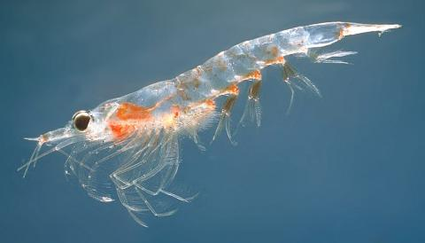

| 크릴 | ||
|---|---|---|
|  | ||
| 이름(영어 이름) : | 크릴새우(Krill) | |
| 분류 : | 동물계 - 난바다곤쟁이목 - 크릴 | |
| 특징 : |
크기는 일반적으로 10~20mm를 머물지만 몇몇 종은 십 수 cm까지 큰다. 개체의 크기는 작지만 워낙 수가 많아서 같은 종의 개체들의 체중을 모두 합한 생물체량로는 단일 종으로는 세계 최대의 종이라고 한다. 펭귄, 바닷새, 물범, 물고기, 그리고 고래까지 모두 크릴을 먹이로 삼아 남극 먹이사슬의 뿌리 역할을 한다. 크릴은 스스로 빛을 낼 수 있다. 크릴이 공기 중의 이산화탄소를 포집, 그것을 해저로 깊숙이 내려보내는 데 중요한 역할을 한다. 하지만 최근 크릴 어업이 성행하면서 크릴의 개체수가 많이 줄었다. | |
| 출처: [나무위키] 크릴새우, [그린피스] 당신이 크릴에 대해 모르는 5가지 사실 | ||
| 출처 : [youtube] Antarctic Krill: Carbon Conveyor Belt of the Southern Ocean | Pew |
2020년 6월
2015442 양현서